NOAA Storm Database Study: the worst events
HTML version:
NOAA-stormDB.html
In this study we will analise the NOAA Storm Database in order to determine what are the worst natural catastrofic events, both in terms of public health and in economic impact.
The U.S. National Oceanic and Atmospheric Administration’s (NOAA) storm database tracks characteristics of major storms and weather events in the United States, including when and where they occur, as well as estimates of any fatalities, injuries, and property damage.
The database currently contains data from January 1950 to January 2017, as entered by NOAA’s National Weather Service (NWS).
The database can be found on:
https://www.ncdc.noaa.gov/stormevents/ftp.jsp
Data Processing
Here we load and process the data in order the answer the questions:
Across the United States, which types of events were the most harmful with respect to population health ever recorded in a single occurrence?
Which types of events caused most harm to population health along all those years?
Which types of events had the greatest economic consequences in a single occurrence?
Which types of events had the greatest economic consequences along all those years?
Which are the places that were subject to the greatest losses, both in population health and economic consequences?
First, lets load the original data and them choose which variables are useful to answer our questions:
# linhas <- nrow(dados)
# linhas <- sample(linhas,50000)
# dataS <- dados[linhas,]
# write.csv(dataS, "StormData")library(scales)
library(data.table)
library(chron)
library(dplyr)
library(lubridate)
library(ggplot2)
library(rmarkdown)
library(RColorBrewer)
library(gridExtra)
library(grid)#fileUrl <- "https://d396qusza40orc.cloudfront.net/repdata%2Fdata%2FStormData.csv.bz2"
#download.file(fileUrl, "StormData.bz2", method = "curl")
#Full data
#dados <- fread(sprintf("bzcat %s | tr -d '\\000'", "StormData.bz2"), na.strings = "")
dados <- fread(sprintf("bzcat %s | tr -d '\\000'", "StormData.bz2"))
dados <-tbl_df(dados)
names(dados) <- gsub("_", ".", tolower(names(dados)))
names(dados) ## [1] "stormdata0000664000175000017500016166024313076412760013112 0ustar erickfiserickfis\"\""
## [2] "state.."
## [3] "bgn.date"
## [4] "bgn.time"
## [5] "time.zone"
## [6] "county"
## [7] "countyname"
## [8] "state"
## [9] "evtype"
## [10] "bgn.range"
## [11] "bgn.azi"
## [12] "bgn.locati"
## [13] "end.date"
## [14] "end.time"
## [15] "county.end"
## [16] "countyendn"
## [17] "end.range"
## [18] "end.azi"
## [19] "end.locati"
## [20] "length"
## [21] "width"
## [22] "f"
## [23] "mag"
## [24] "fatalities"
## [25] "injuries"
## [26] "propdmg"
## [27] "propdmgexp"
## [28] "cropdmg"
## [29] "cropdmgexp"
## [30] "wfo"
## [31] "stateoffic"
## [32] "zonenames"
## [33] "latitude"
## [34] "longitude"
## [35] "latitude.e"
## [36] "longitude."
## [37] "remarks"
## [38] "refnum"dados <- select(dados, -1)This database has 50000 observations. Each observation corresponds to an event occurrence.
To determine the most harmful events to human health, we will check the variables related to human health, which are “fatalities” and “injuries”.
To determine the most harmful events to economy, we will check the variables related to economic measures, from “propdmg” through “cropdmgexp”.
Also, in order to analyse various occurrences of the same event, we will measure the duration of the event, its magnitude and where the event occurred (state and county name).
# select desired vars
harm.df <- dados %>% select(evtype, mag, state, countyname, bgn.date, end.date, 23:28)
# treat vars
harm.df <- harm.df %>%
mutate(bgn.date = mdy_hms(bgn.date), end.date = mdy_hms(end.date),
day = as.Date(bgn.date, "%m/%d/%Y"),
duration = -as.period(interval(end.date, bgn.date)),
event = tolower(as.character(evtype)),
countyname =strtrim(countyname,9)) %>%
select(event, 2, day, duration, 3:4, 7:12)
# fixing exp for economic data
harm.df$propdmgexp[which(harm.df$propdmgexp=="K")] <- as.character(3)
harm.df$propdmgexp[which(harm.df$propdmgexp=="m")] <- as.character(3)
harm.df$propdmgexp[which(harm.df$propdmgexp=="M")] <- as.character(6)
harm.df$propdmgexp[which(harm.df$propdmgexp=="B")] <- as.character(9)
harm.df$propdmgexp <- as.numeric(harm.df$propdmgexp)
harm.df$cropdmgexp[which(harm.df$cropdmgexp=="K")] <- as.character(3)
harm.df$cropdmgexp[which(harm.df$cropdmgexp=="m")] <- as.character(3)
harm.df$cropdmgexp[which(harm.df$cropdmgexp=="M")] <- as.character(6)
harm.df$cropdmgexp[which(harm.df$cropdmgexp=="B")] <- as.character(9)
harm.df$cropdmgexp <- as.numeric(harm.df$cropdmgexp)
harm.df <- mutate(harm.df, prop.ev = propdmg*10^propdmgexp,
crop.ev = cropdmg*10^cropdmgexp)
# treating event types
eventos <- harm.df$event
# first, need to see what are the event types
contagem <- sort(table(eventos))
# them we create this list of terms
lista <- c(
"wind",
"snow",
"flood",
"cold|freez",
"hurricane",
"tornado",
"rain|precip",
"hail",
"heat|warm",
"tide",
"storm",
"record",
"blizzard",
"fire",
"funnel",
"surf")
for (i in 1:length(lista)) {
eventos[grepl(lista[i], eventos)] <- lista[i]
}
# lets group the events whose count is < 5 and call it "other"
contagem <- sort(table(eventos))
outros <- names(contagem[contagem<5])
eventos[eventos %in% outros] <- "other"
# sort(table(eventos))
# returning treated events
harm.df$event <- toupper(eventos)
rm(dados)There are occurrences that caused zero fatalities but a lot of injuries, so we did a separate analisys to fatal and non-fatal events.
Most fatal in a single occurrence
In order to determine what were the most fatal events in a single occurrence, we need to see how fatalities are distributed along the occurrences.
# subset original data
fatal.df <- harm.df %>%
filter(!is.na(fatalities)) %>%
select(1:7)
# quantiles
qt <- quantile(fatal.df$fatalities, probs=seq(.9,1,0.001))
# display only the qts next to fatal events
qt[(length(qt)-(length(qt[qt>=1])+1)): length(qt)]## 99.1% 99.2% 99.3% 99.4% 99.5% 99.6% 99.7% 99.8% 99.9% 100.0%
## 0 0 1 1 1 1 1 2 2 30# distribution plot
plt.distr.fatal0 <- ggplot(fatal.df, aes(fatalities))
plt.distr.fatal0 <- plt.distr.fatal0 + geom_density(aes(y=..density..)) + xlim(0,.5) +
labs(title="All events") +
theme(plot.title = element_text(hjust = 0.5)) Looking at this distribution, we can infer that the vast majority of those occurrences were not fatal at all: 99.2% occurrences didn’t caused any fatalities.
On the other hand, fatal occurrences had to have at least 1 fatality.
Now, among the fatal occurrences, we are interested in the ones whose fatalities are beyond the confidence interval, ie. above 95% of the most common values.
# subset for fatal events
fatal.df <- filter(fatal.df, fatalities > 0) %>%
arrange(desc(fatalities)) %>%
mutate(mean = mean(fatalities),
median = median(fatalities),
rank = seq_len(length(event)))
# quantiles, same as
# poisson.test(mean, conf.level = 0.95)
qt <- quantile(fatal.df$fatalities, probs=seq(.975,1,0.005))
qt## 97.5% 98% 98.5% 99% 99.5% 100%
## 7.00 9.72 11.00 14.72 23.26 30.00# distribution plot
plt.distr.fatal1 <- ggplot(fatal.df, aes(fatalities))
plt.distr.fatal1 <- plt.distr.fatal1 + geom_density(aes(y=..density..)) + xlim(0,qt[1]) +
labs(title="Fatal events") +
theme(plot.title = element_text(hjust = 0.5))
grid.arrange(plt.distr.fatal0, plt.distr.fatal1, nrow=1, ncol=2,
bottom="Figure 1 - Distribution of fatalities: all events VS fatal events")
grid.rect(gp=gpar(fill=NA))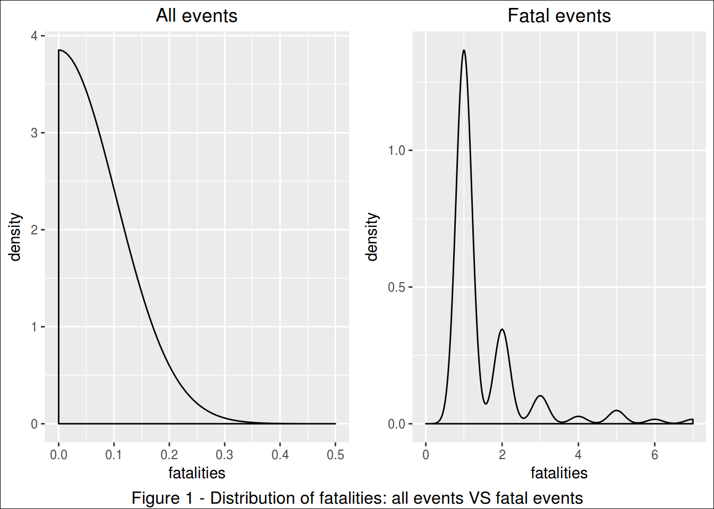
Looking at this distribution, we can infer that 95% of the fatal occurrences caused up to 7 fattalities.
In this study, we looked on the 5% deadliest occurrences.
# subset for 95% CI
fatal95.df <- fatal.df %>% filter(fatalities>qt[1])
# create color pallete for all events
colourCount = length(unique(fatal95.df$event))
getPalette = colorRampPalette(brewer.pal(colourCount, "Set1"))
# print a table
kable(fatal95.df[, c(10,1:9)])| rank | event | mag | day | duration | state | countyname | fatalities | mean | median |
|---|---|---|---|---|---|---|---|---|---|
| 1 | HEAT|WARM | 0 | 2005-07-12 | 0S | AZ | AZZ023 | 30 | 1.90137 | 1 |
| 2 | TORNADO | 0 | 1990-08-28 | NA | IL | WILL | 29 | 1.90137 | 1 |
| 3 | HEAT|WARM | 0 | 2001-08-06 | 0S | PA | PAZ054>05 | 22 | 1.90137 | 1 |
| 4 | HEAT|WARM | 0 | 2011-07-17 | 0S | IL | ILZ014 | 16 | 1.90137 | 1 |
| 5 | TORNADO | 0 | 1971-02-21 | NA | MS | LEFLORE | 14 | 1.90137 | 1 |
| 6 | TORNADO | 0 | 1965-04-11 | NA | OH | ALLEN | 11 | 1.90137 | 1 |
| 7 | FLOOD | 0 | 1997-08-12 | 0S | AZ | COCONINO | 11 | 1.90137 | 1 |
| 8 | FLOOD | 0 | 2010-05-01 | 0S | TN | DAVIDSON | 10 | 1.90137 | 1 |
| 9 | TORNADO | 0 | 2011-04-27 | 0S | AL | WALKER | 9 | 1.90137 | 1 |
# prepare text for inline R
worst.fatal.single.ev <- fatal95.df$event[1]
worst.fatal.single.st <- fatal95.df$state[1]
worst.fatal.single.ct <- fatal95.df$countyname[1]
worst.fatal.single.dt <- fatal95.df$day[1]
worst.fatal.single.kill <- fatal95.df$fatalities[1]# the plot
plt.fatal.single <- ggplot(fatal95.df, aes(day, fatalities, colour=event))
(plt.fatal.single <- plt.fatal.single + geom_point() +
geom_text(aes(label=ifelse(rank <= 10,
as.character(day),""),
hjust=-.03,vjust=0.5)) +
geom_hline(aes(yintercept = mean), linetype=2) +
geom_hline(aes(yintercept = median), linetype=3) +
labs(title="Most Fatal Events in a Single Occurrence",
y="Fatalities", x="Ocurrence Date") +
expand_limits(x=as.Date('2017-01-01'))+ #ok
scale_colour_manual(values = getPalette(colourCount))+
theme(legend.title=element_blank()) +
theme(legend.position="bottom") +
guides(fill=guide_legend(nrow=5, byrow=TRUE)) +
theme(axis.text.x = element_text(angle = 90, hjust = 1)) +
theme(plot.title = element_text(hjust = 0.5))
) 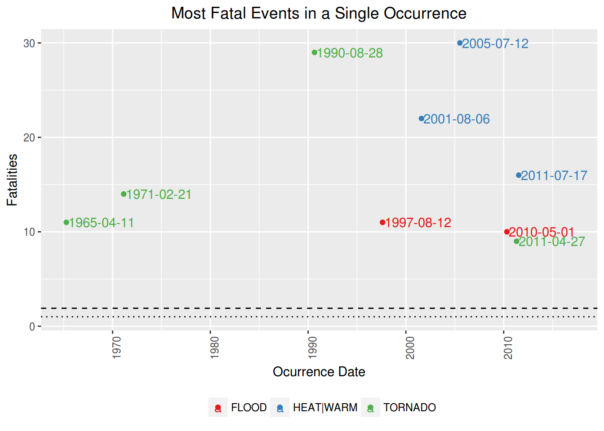
The single most fatal event was a HEAT|WARM, that occurred in AZ, AZZ023, on 2005-07-12, killing 30 people.
However, if we compare this single awful event to the mean of fatalities caused, we see that this is very unlikely to happen.
Most fatal in all time
Notice that are several occurrences of the same type of event along the time.
Therefore, in order to know which is the worst type of event along all the years, we summed up the fatalities caused by each one of occurrences of this events.
Notice that we are interested only in the worst of them, ie, the ones which are above the mean.
# totals per event
fatal.all.df <- fatal.df %>% group_by(event) %>%
summarise(total = sum(fatalities)) %>% arrange(desc(total)) %>%
mutate(mean = mean(total), median = median(total),
rank = seq_len(length(event))) %>%
filter(total > mean(total))
# create color pallete for all events
colourCount = length(unique(fatal.all.df$event))
getPalette = colorRampPalette(brewer.pal(colourCount, "Set1"))
# prepare text for inline R
worst.fatal.all.ev <- fatal.all.df$event[1]
worst.fatal.all.kill <- fatal.all.df$total[1]
# a table
kable(fatal.all.df[,c(5,1:4)])| rank | event | total | mean | median |
|---|---|---|---|---|
| 1 | TORNADO | 219 | 34.7 | 10 |
| 2 | HEAT|WARM | 134 | 34.7 | 10 |
| 3 | FLOOD | 85 | 34.7 | 10 |
| 4 | WIND | 69 | 34.7 | 10 |
| 5 | LIGHTNING | 51 | 34.7 | 10 |
# the plot
plt.fatal.all <- ggplot(data=fatal.all.df, aes(event, total, fill=event))
(plt.fatal.all <- plt.fatal.all + geom_bar(stat="identity") +
geom_text(aes(label=ifelse(total==max(total),
paste(event, max(total), sep=": "),'')),
hjust=0,vjust=2) +
geom_hline(aes(yintercept = mean), linetype=1) +
geom_hline(aes(yintercept = median), linetype=2) +
labs(title="Most Fatal events - all time", y="Fatalities",
x="") +
theme(legend.position="none") +
scale_colour_manual(values = getPalette(colourCount))+
theme(legend.title=element_blank()) +
theme(axis.text.x = element_text(angle = 90, hjust = 1)) +
theme(plot.title = element_text(hjust = 0.5))
) 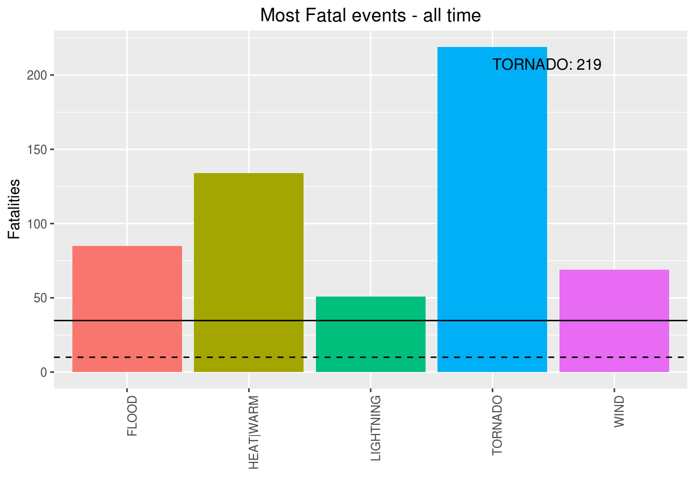
The most fatal event along the time is the TORNADO. It has killed 219 people until now.
Just for curiosity, these are the less fatal among the fatal events:
# sort for less dangerous, had to subset again due to previous filtering
fatal.all.df <- fatal.df %>% group_by(event) %>%
summarise(total = sum(fatalities)) %>% arrange(total) %>%
mutate(mean = mean(total), median = median(total),
rank = seq(length(event),1, by=-1))
# a table
kable(fatal.all.df[1:10,c(5,1:2)])| rank | event | total |
|---|---|---|
| 20 | FOG | 1 |
| 19 | WINTER WEATHER/MIX | 1 |
| 18 | URBAN/SML STREAM FLD | 3 |
| 17 | WINTER WEATHER | 3 |
| 16 | FIRE | 6 |
| 15 | RAIN|PRECIP | 7 |
| 14 | SNOW | 8 |
| 13 | COLD|FREEZ | 9 |
| 12 | BLIZZARD | 10 |
| 11 | HURRICANE | 10 |
Most injuring in a single occurrence
In order to determine what were the most injuring events in a single occurrence, we need to see how injuries are distributed along the occurrences.
rm(fatal.df,fatal.all.df, fatal95.df, qt) # cleannig house
injuring.df <- harm.df %>% filter(!is.na(injuries)) %>%
select(1:6,8)
# quantiles
qt <- quantile(injuring.df$injuries, probs=seq(.975,1,0.002))
# display only the qts next to injuring events
qt[(length(qt)-(length(qt[qt>=1])+1)): length(qt)]## 97.9% 98.1% 98.3% 98.5% 98.7% 98.9% 99.1% 99.3% 99.5% 99.7% 99.9%
## 0 0 1 1 1 1 2 3 4 7 22# distribution plot
plt.distr.inj0 <- ggplot(injuring.df, aes(injuries))
plt.distr.inj0 <- plt.distr.inj0 + geom_density(aes(y=..density..)) + xlim(0,0.5) +
labs(title="All events") +
theme(plot.title = element_text(hjust = 0.5)) Looking at this distribution, we can infer that the vast majority of those occurrences were not injuring at all: 98.1% occurrences didn’t caused any injuries
On the other hand, injuring occurrences had to have at least 1 injury.
Now, among the injuring occurrences, we are interested in the ones whose harm is beyond the confidence interval, ie. above 95% of the most common values.
# subset for harm events
injuring.df <- injuring.df %>% filter(injuries > 0) %>%
arrange(desc(injuries)) %>%
mutate(mean = mean(injuries),
median = median(injuries),
rank = seq_len(length(event)))
# quantiles, same as
# poisson.test(mean, conf.level = 0.95)
qt <- quantile(injuring.df$injuries, probs=seq(.975,1,0.005))
qt## 97.5% 98% 98.5% 99% 99.5% 100%
## 42.60 50.84 59.84 98.92 133.20 350.00# distribution plot
plt.distr.inj1 <- ggplot(injuring.df, aes(injuries))
plt.distr.inj1 <- plt.distr.inj1 + geom_density(aes(y=..density..)) + xlim(0,qt[1]) +
labs(title="Injuring events") +
theme(plot.title = element_text(hjust = 0.5))
grid.arrange(plt.distr.inj0, plt.distr.inj1, nrow=1, ncol=2,
bottom="Figure 2 - Distribution of Injuries: all events VS injuring events")
grid.rect(gp=gpar(fill=NA))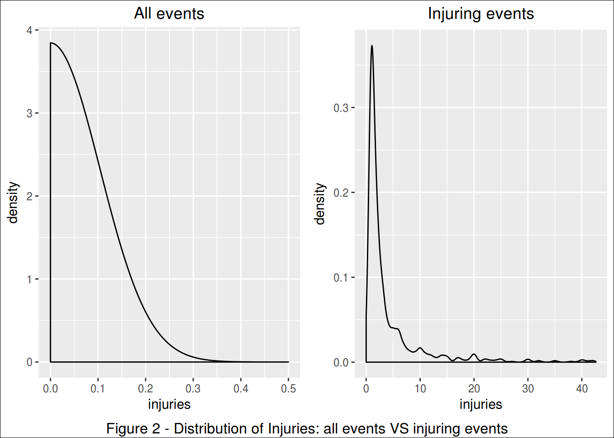
Looking at this distribution, we can infer that 95% of the injuring occurrences caused up to 42.6 injuries.
In this study, we looked on the 5% most injuring occurrences.
# subset for 95% CI
injuring95.df <- filter(injuring.df, injuries>qt[1])
# create color pallete for all events
colourCount = length(unique(injuring95.df$event))
getPalette = colorRampPalette(brewer.pal(colourCount, "Set1"))
# print a table
kable(injuring95.df[,c(10,1:9)])| rank | event | mag | day | duration | state | countyname | injuries | mean | median |
|---|---|---|---|---|---|---|---|---|---|
| 1 | TORNADO | 0 | 1990-08-28 | NA | IL | WILL | 350 | 6.691569 | 2 |
| 2 | TORNADO | 0 | 1984-03-28 | NA | NC | ROBESON | 280 | 6.691569 | 2 |
| 3 | TORNADO | 0 | 1971-02-21 | NA | MS | LEFLORE | 192 | 6.691569 | 2 |
| 4 | TORNADO | 0 | 1974-04-03 | NA | OH | HAMILTON | 190 | 6.691569 | 2 |
| 5 | HEAT|WARM | 0 | 2011-06-13 | 0S | TX | TXZ119 | 140 | 6.691569 | 2 |
| 6 | TORNADO | 0 | 1956-04-03 | NA | MI | KENT | 130 | 6.691569 | 2 |
| 7 | TORNADO | 0 | 1971-02-07 | NA | FL | ESCAMBIA | 112 | 6.691569 | 2 |
| 8 | TORNADO | 0 | 1974-04-03 | NA | AL | MADISON | 110 | 6.691569 | 2 |
| 9 | TORNADO | 0 | 1965-04-11 | NA | OH | ALLEN | 100 | 6.691569 | 2 |
| 10 | TORNADO | 0 | 2000-09-20 | 0S | OH | GREENE | 100 | 6.691569 | 2 |
| 11 | TORNADO | 0 | 2002-09-20 | 0S | IN | MARION | 97 | 6.691569 | 2 |
| 12 | WIND | 0 | 1993-10-26 | 0S | CA | CAZ011 - | 89 | 6.691569 | 2 |
| 13 | TORNADO | 0 | 1973-05-27 | NA | AL | HALE | 72 | 6.691569 | 2 |
| 14 | TORNADO | 0 | 2011-04-16 | 0S | NC | WAKE | 67 | 6.691569 | 2 |
| 15 | STORM | 0 | 1997-03-31 | 0S | UT | UTZ001>00 | 60 | 6.691569 | 2 |
| 16 | STORM | 0 | 1999-01-02 | 0S | OH | OHZ003 - | 56 | 6.691569 | 2 |
| 17 | SURF | 0 | 2008-07-11 | 0S | DE | DEZ004 | 55 | 6.691569 | 2 |
| 18 | TORNADO | 0 | 1965-05-08 | NA | NE | BOONE | 53 | 6.691569 | 2 |
| 19 | WIND | 0 | 1998-05-31 | 0S | MI | KENT | 53 | 6.691569 | 2 |
| 20 | FLOOD | 0 | 1998-08-23 | 0S | TX | TXZ185 - | 50 | 6.691569 | 2 |
| 21 | TORNADO | 0 | 2011-04-27 | 1d 0H 0M 0S | AL | MARSHALL | 48 | 6.691569 | 2 |
| 22 | HEAT|WARM | 0 | 2004-07-09 | 0S | MO | MOZ061 - | 45 | 6.691569 | 2 |
| 23 | TORNADO | 0 | 1977-04-02 | NA | MI | EATON | 44 | 6.691569 | 2 |
| 24 | TORNADO | 0 | 1997-11-21 | 0S | LA | ST. TAMMA | 43 | 6.691569 | 2 |
# prepare text for inline R
worst.injuring.single.ev <- injuring95.df$event[1]
worst.injuring.single.st <- injuring95.df$state[1]
worst.injuring.single.ct <- injuring95.df$countyname[1]
worst.injuring.single.dt <- injuring95.df$day[1]
worst.injuring.single.inj <- injuring95.df$injuries[1]# the plot
plt.inj.single <- ggplot(injuring95.df, aes(day, injuries, colour=event))
(plt.inj.single <- plt.inj.single + geom_point() +
geom_text(aes(label=ifelse(rank <= 10,
as.character(day),""),
hjust=-.03,vjust=0.5)) +
geom_hline(aes(yintercept = mean), linetype=2) +
geom_hline(aes(yintercept = median), linetype=3) +
labs(title="Most Injuring Events in a Single Occurrence",
y="Injuries", x="Ocurrence Date") +
expand_limits(x=as.Date('2017-01-01'))+ #ok
scale_colour_manual(values = getPalette(colourCount))+
theme(legend.title=element_blank()) +
theme(legend.position="bottom") +
guides(fill=guide_legend(nrow=5, byrow=TRUE)) +
theme(axis.text.x = element_text(angle = 90, hjust = 1)) +
theme(plot.title = element_text(hjust = 0.5))
) 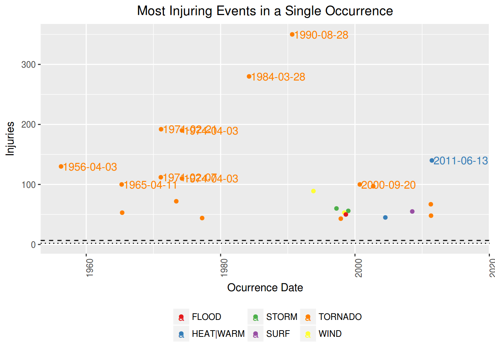
The single most injuring event was a TORNADO, that occurred in IL, WILL, on 1990-08-28, injuring 350 people.
However, if we compare this single awful event to the mean of injuries caused, we see that this is very unlikely to happen.
Most injuring in all time
Notice that are several occurrences of the same type of event along the time.
Therefore, in order to know which is the worst type of event along all the years, we summed up the injuries caused by each one of occurrences of this events.
Notice that we are interested only in the worst of them, ie, the ones which are above the mean.
# totals per event
injuring.all.df <- injuring.df %>% group_by(event) %>%
summarise(total = sum(injuries)) %>%
arrange(desc(total)) %>%
mutate(mean = mean(total), median = median(total),
rank = seq_len(length(event))) %>%
filter(total >= mean(total))
# create color pallete for all events
colourCount = length(unique(injuring.all.df$event))
getPalette = colorRampPalette(brewer.pal(colourCount, "Set1"))
# prepare text for inline R
worst.injuring.all.ev <- injuring.all.df$event[1]
worst.injuring.all.inj <- injuring.all.df$injuries[1]
# a table
kable(injuring.all.df[,c(5,1:4)])| rank | event | total | mean | median |
|---|---|---|---|---|
| 1 | TORNADO | 4146 | 285 | 33 |
| 2 | WIND | 662 | 285 | 33 |
| 3 | LIGHTNING | 334 | 285 | 33 |
| 4 | HEAT|WARM | 300 | 285 | 33 |
The most injuring event along the time is the TORNADO. It has injuried people until now.
# the plot
plt.inj.all <- ggplot(data=injuring.all.df, aes(event, total, fill=event))
(plt.inj.all <- plt.inj.all + geom_bar(stat="identity") +
geom_text(aes(label=ifelse(total==max(total),
paste(event, max(total), sep=": "),'')),
hjust=0,vjust=2) +
geom_hline(aes(yintercept = mean), linetype=1) +
geom_hline(aes(yintercept = median), linetype=2) +
labs(title="Most Injuring events - all time",
y="Injuries", x="") +
theme(legend.position="none") +
scale_colour_manual(values = getPalette(colourCount))+
theme(legend.title=element_blank()) +
theme(axis.text.x = element_text(angle = 90, hjust = 1)) +
theme(plot.title = element_text(hjust = 0.5))
)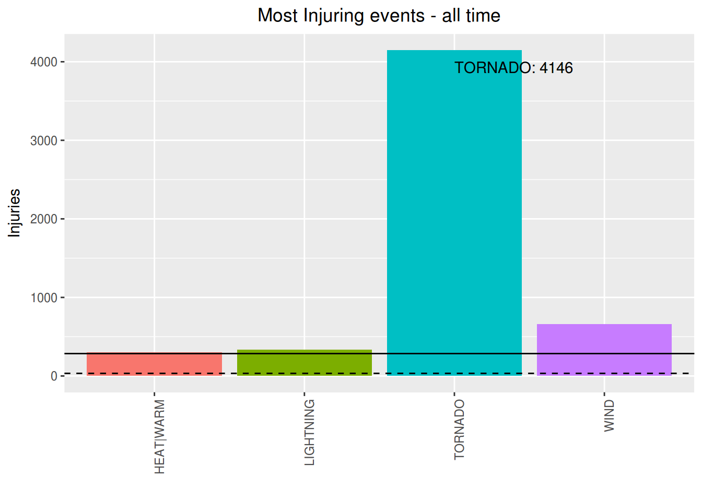
Just for curiosity, lets show now what are the less injuring among the injuring events:
# sort for less dangerous, had to subset again due to previous filtering
injuring.all.df <- injuring.df %>% group_by(event) %>%
summarise(total = sum(injuries)) %>% arrange(total) %>%
mutate(mean = mean(total), median = median(total),
rank = seq(length(event),1, by=-1))
# a table
kable(injuring.all.df[1:10,c(5,1:2)])| rank | event | total |
|---|---|---|
| 22 | HURRICANE | 1 |
| 21 | DUST DEVIL | 2 |
| 20 | WINTER WEATHER/MIX | 3 |
| 19 | URBAN/SML STREAM FLD | 4 |
| 18 | BLIZZARD | 5 |
| 17 | RAIN|PRECIP | 8 |
| 16 | RIP CURRENT | 11 |
| 15 | AVALANCHE | 14 |
| 14 | COLD|FREEZ | 15 |
| 13 | WINTER WEATHER | 21 |
Here we determine what are events did more harm to economy, both int terms of property and crops damage.
There are events that causes zero property damage but a lot of crop damage. The inverse is also true, so we did a separate analisys to property VS crop damaging events.
Most Property Damaging event in a single occurrence
In order to determine what were the most property damaging events in a single occurrence, we need to see how damages are distributed along the occurrences.
# property damages
rm(injuring.df, injuring.all.df, injuring95.df) # cleannig house
prop.df <- harm.df %>% filter(!is.na(prop.ev)) %>%
select(1:6,13)
# quantiles
qt <- quantile(prop.df$prop.ev, probs=seq(.975,1,0.002))
# display only the qts next to harmfull events
qt## 97.5% 97.7% 97.9% 98.1% 98.3% 98.5% 98.7% 98.9%
## 800000 1000000 1100000 1600000 2000000 2500000 2500000 2500000
## 99.1% 99.3% 99.5% 99.7% 99.9%
## 3500000 5000000 10000000 25000000 75000000# distribution plot
plt.distr.prop0 <- ggplot(prop.df, aes(log(prop.ev)))
plt.distr.prop0 <- plt.distr.prop0 + geom_density(aes(y=..density..)) + #xlim(0,.5) +
labs(title="All events", x="log(amount $)") +
theme(plot.title = element_text(hjust = 0.5)) Looking at this distribution, we can infer that 95% of the occurrences caused less than $800,000 in losses.
On the other hand, damaging occurrences had to have damages above zero.
Now, among the damaging occurrences, we are interested in the ones whose damages are beyond the confidence interval, ie. above 95% of the most common values.
# subset for harm events
prop.df <- prop.df %>% filter(prop.ev > 0) %>%
arrange(desc(prop.ev)) %>%
mutate(value = dollar(prop.ev),
media.raw = mean(prop.ev),
mediana.raw = median(prop.ev),
mean = dollar(media.raw),
median = dollar(mediana.raw),
rank = seq_len(length(event)))
# quantiles, same as
qt <- quantile(prop.df$prop.ev, probs=seq(.999,1,0.002))
qt## 99.9%
## 132280000# distribution plot
plt.distr.prop1 <- ggplot(prop.df, aes(log(prop.ev)))
plt.distr.prop1 <- plt.distr.prop1 + geom_density(aes(y=..density..)) + #xlim(0,100) +
labs(title="Damaging events", x="log(amount $)") +
theme(plot.title = element_text(hjust = 0.5))
grid.arrange(plt.distr.prop0, plt.distr.prop1, nrow=1, ncol=2,
bottom="Figure - Distribution of Losses: all events VS damaging events")
grid.rect(gp=gpar(fill=NA)) 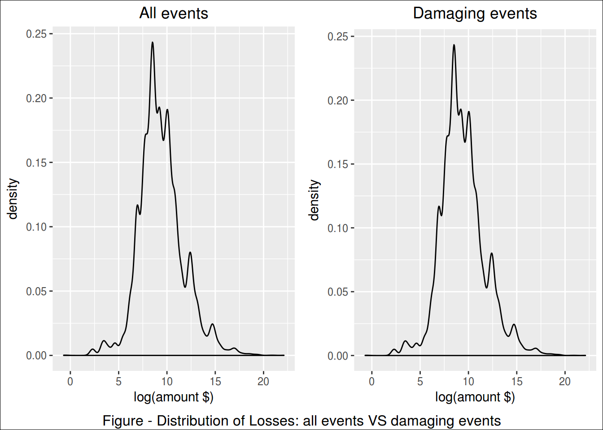
Looking at this distribution, we can infer that 95% of the damaging occurrences caused up to $132,280,000 in losses.
In this study, we looked on the 0,1% most harmful occurrences.
# subset for 95% CI
prop95.df <- filter(prop.df, prop.ev>qt[1])
# create color pallete for all events
colourCount = length(unique(prop95.df$event))
getPalette = colorRampPalette(brewer.pal(colourCount, "Set1"))
# print a table
kable(prop95.df[,c(13,1:6,8,11:12)])| rank | event | mag | day | duration | state | countyname | value | mean | median |
|---|---|---|---|---|---|---|---|---|---|
| 1 | HURRICANE | 0 | 2004-09-13 | 0S | FL | FLZ001>00 | $4,000,000,000 | $1,085,341 | $10,000 |
| 2 | FLOOD | 0 | 2010-05-01 | 0S | TN | DAVIDSON | $1,500,000,000 | $1,085,341 | $10,000 |
| 3 | WIND | 94 | 2004-08-13 | 0S | FL | FLZ052 - | $929,000,000 | $1,085,341 | $10,000 |
| 4 | WIND | 0 | 1993-10-26 | 0S | CA | CAZ011 - | $331,000,000 | $1,085,341 | $10,000 |
| 5 | STORM | 0 | 1998-09-07 | 0S | TX | TXZ163>16 | $287,180,000 | $1,085,341 | $10,000 |
| 6 | FLOOD | 0 | 2010-07-24 | 0S | IL | COOK | $253,380,000 | $1,085,341 | $10,000 |
| 7 | TORNADO | 0 | 1973-03-31 | NA | GA | OCONEE | $250,000,000 | $1,085,341 | $10,000 |
| 8 | TORNADO | 0 | 1980-06-03 | NA | PA | ALLEGHENY | $250,000,000 | $1,085,341 | $10,000 |
| 9 | TORNADO | 0 | 1990-08-28 | NA | IL | WILL | $250,000,000 | $1,085,341 | $10,000 |
| 10 | HAIL | 450 | 1996-04-19 | 0S | TX | BELL | $200,000,000 | $1,085,341 | $10,000 |
| 11 | FLOOD | 0 | 2011-09-07 | 0S | NY | BROOME | $170,000,000 | $1,085,341 | $10,000 |
| 12 | FLOOD | 0 | 2000-08-12 | 0S | NJ | SUSSEX | $166,500,000 | $1,085,341 | $10,000 |
| 13 | FIRE | 0 | 1998-07-01 | 0S | FL | VOLUSIA | $150,000,000 | $1,085,341 | $10,000 |
| 14 | HURRICANE | 0 | 1998-09-25 | 0S | FL | FLZ001>00 | $135,000,000 | $1,085,341 | $10,000 |
# prepare text for inline R
worst.prop.single.ev <- prop95.df$event[1]
worst.prop.single.st <- prop95.df$state[1]
worst.prop.single.ct <- prop95.df$countyname[1]
worst.prop.single.dt <- prop95.df$day[1]
worst.prop.single.value <- prop95.df$value[1]plt.prop.single <- ggplot(prop95.df, aes(day, prop.ev, colour=event))
(plt.prop.single <- plt.prop.single + geom_point() +
geom_text(aes(label=ifelse(rank <= 10,
as.character(day),""),
hjust=-.03,vjust=0.5)) +
geom_hline(aes(yintercept = media.raw), linetype=2) +
geom_hline(aes(yintercept = mediana.raw), linetype=3) +
labs(title="Most Property Dammaging Events in a Single Occurrence",
y="Damages", x="") +
expand_limits(x=as.Date('2017-01-01'))+ #ok
scale_y_continuous(labels = dollar)+
scale_colour_manual(values = getPalette(colourCount))+
theme(legend.title=element_blank()) +
theme(legend.position="bottom") +
guides(fill=guide_legend(nrow=5, byrow=TRUE)) +
theme(axis.text.x = element_text(angle = 90, hjust = 1)) +
theme(plot.title = element_text(hjust = 0.5))
) 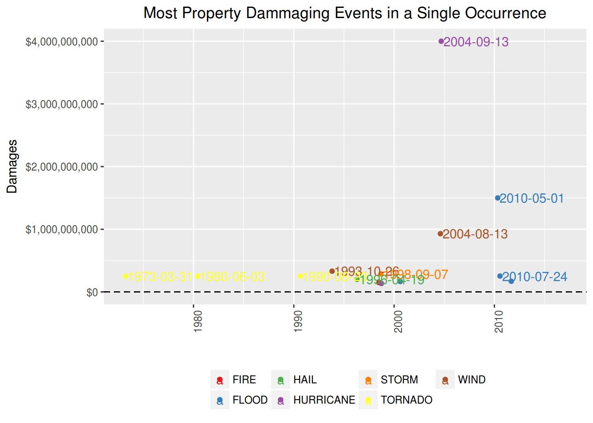
The single most economic damaging event to properties was a HURRICANE, that occurred in FL, FLZ001>00, on 2004-09-13, causing U$ $4,000,000,000 in losses.
Most Property Damaging event in all time
Notice that are several occurrences of the same type of event along the time.
Therefore, in order to know which is the worst type of event along all the years, we summed up the losses caused by each one of occurrences of this events.
Notice that we are interested only in the worst of them, ie, the ones which are above the mean.
# totals per event
prop.all.df <- prop.df %>% group_by(event) %>%
summarise(total.raw = sum(prop.ev)) %>%
arrange(desc(total.raw)) %>%
mutate(media.raw = mean(total.raw),
mediana.raw = median(total.raw),
total = dollar(total.raw),
mean = dollar(media.raw),
median = dollar(mediana.raw),
rank = seq_len(length(event))) %>%
filter(total.raw > mean(total.raw))
# create color pallete for all events
colourCount = length(unique(prop.all.df$event))
getPalette = colorRampPalette(brewer.pal(colourCount, "Set1"))
# prepare text for inline R
worst.prop.all.ev <- prop.all.df$event[1]
worst.prop.total <- prop.all.df$total[1]
# a table
kable(prop.all.df[, c(8,1,5:7)])| rank | event | total | mean | median |
|---|---|---|---|---|
| 1 | HURRICANE | $4,451,850,000 | $576,229,411 | $5,740,000 |
| 2 | FLOOD | $3,312,490,770 | $576,229,411 | $5,740,000 |
| 3 | TORNADO | $2,722,436,940 | $576,229,411 | $5,740,000 |
| 4 | WIND | $1,906,067,665 | $576,229,411 | $5,740,000 |
| 5 | STORM | $797,084,200 | $576,229,411 | $5,740,000 |
| 6 | HAIL | $793,153,761 | $576,229,411 | $5,740,000 |
plt.prop.all <- ggplot(data=prop.all.df, aes(event, total.raw, fill=event))
(plt.prop.all <- plt.prop.all + geom_bar(stat="identity") +
geom_text(aes(label=ifelse(total.raw==max(total.raw),
paste(event, dollar(max(total.raw)), sep=": "),'')),
hjust=0,vjust=2) +
geom_hline(aes(yintercept = media.raw), linetype=1) +
geom_hline(aes(yintercept = mediana.raw), linetype=2) +
labs(title="Most property damaging event", y="Damages", x="") +
scale_y_continuous(labels = dollar)+
theme(legend.position="none") +
scale_colour_manual(values = getPalette(colourCount))+
theme(legend.title=element_blank()) +
theme(axis.text.x = element_text(angle = 90, hjust = 1)) +
theme(plot.title = element_text(hjust = 0.5))
) 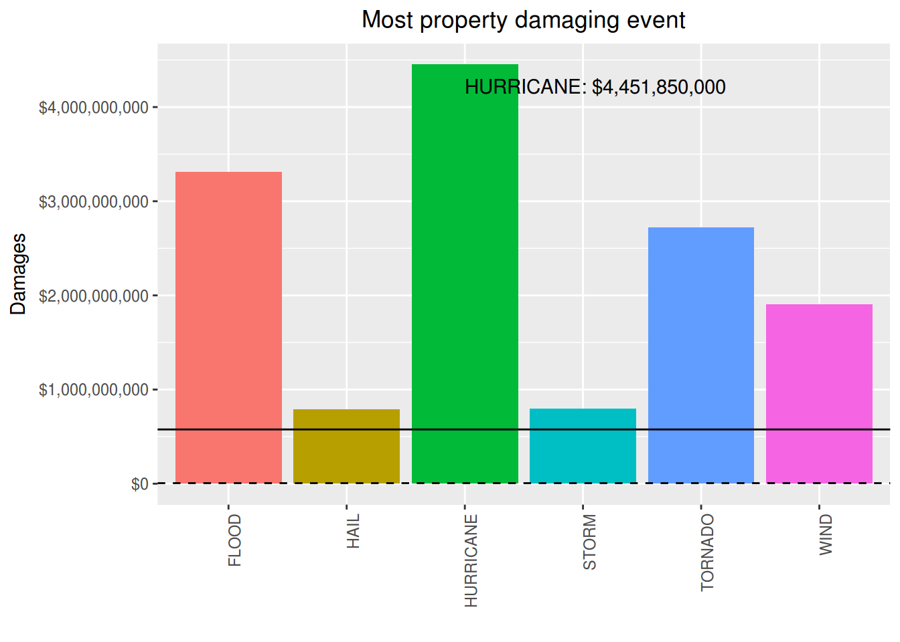
The most property damaging event along the time is the HURRICANE. It has caused $4,451,850,000 in losses.
Just for curiosity, these are the less damaging events:
prop.all.df <- prop.df %>% group_by(event) %>%
summarise(total.raw = sum(prop.ev)) %>%
arrange(total.raw) %>%
mutate(media.raw = mean(total.raw),
mediana.raw = median(total.raw),
total = dollar(total.raw),
mean = dollar(media.raw),
median = dollar(mediana.raw),
rank = seq(length(event),1, by=-1))
kable(prop.all.df[1:10, c(8,1,5:7)])| rank | event | total | mean | median |
|---|---|---|---|---|
| 25 | DUST DEVIL | $20,500 | $576,229,411 | $5,740,000 |
| 24 | DRY MICROBURST | $147,500 | $576,229,411 | $5,740,000 |
| 23 | AVALANCHE | $225,500 | $576,229,411 | $5,740,000 |
| 22 | WINTER WEATHER/MIX | $252,000 | $576,229,411 | $5,740,000 |
| 21 | WATERSPOUT | $575,500 | $576,229,411 | $5,740,000 |
| 20 | FOG | $810,000 | $576,229,411 | $5,740,000 |
| 19 | DENSE FOG | $815,000 | $576,229,411 | $5,740,000 |
| 18 | URBAN/SML STREAM FLD | $1,341,000 | $576,229,411 | $5,740,000 |
| 17 | WINTER WEATHER | $1,567,000 | $576,229,411 | $5,740,000 |
| 16 | LANDSLIDE | $2,065,500 | $576,229,411 | $5,740,000 |
Most Crop Damaging event in a single occurrence
In order to determine what were the most crop damaging events in a single occurrence, we need to see how damages are distributed along the occurrences.
# crop damages
rm(prop.df, prop.all.df, prop95.df) # cleannig house
crop.df <- harm.df %>% filter(!is.na(crop.ev)) %>%
select(1:6,14)
# quantiles
qt <- quantile(crop.df$crop.ev, probs=seq(.975,1,0.002))
# display only the qts next to harmfull events
qt## 97.5% 97.7% 97.9% 98.1% 98.3% 98.5% 98.7% 98.9%
## 50000 53690 100000 100000 100000 200000 200000 250000
## 99.1% 99.3% 99.5% 99.7% 99.9%
## 500000 500000 1000000 3000000 20000000# distribution plot
plt.distr.crop0 <- ggplot(crop.df, aes(log(crop.ev)))
plt.distr.crop0 <- plt.distr.crop0 + geom_density(aes(y=..density..)) + #xlim(0,.5) +
labs(title="All events", x="log(amount $)") +
theme(plot.title = element_text(hjust = 0.5)) Looking at this distribution, we can infer that 95% of the occurrences caused less than $50,000 in losses.
On the other hand, damaging occurrences had to have damages above zero.
Now, among the damaging occurrences, we are interested in the ones whose damages are beyond the confidence interval, ie. above 95% of the most common values.
# subset for harm events
crop.df <- crop.df %>% filter(crop.ev > 0) %>%
arrange(desc(crop.ev)) %>%
mutate(value = dollar(crop.ev),
media.raw = mean(crop.ev),
mediana.raw = median(crop.ev),
mean = dollar(media.raw),
median = dollar(mediana.raw),
rank = seq_len(length(event)))
# quantiles, same as
# poisson.test(mean, conf.level = 0.95)
qt <- quantile(crop.df$crop.ev, probs=seq(.975,1,0.005))
qt## 97.5% 98% 98.5% 99% 99.5% 100%
## 5000000 10120000 16120000 20040000 50100000 500000000# distribution plot
plt.distr.crop1 <- ggplot(crop.df, aes(log(crop.ev)))
plt.distr.crop1 <- plt.distr.crop1 + geom_density(aes(y=..density..)) + #xlim(0,qt[1]) +
labs(title="Damaging events", x="log(amount $)") +
# scale_x_continuous(labels = dollar)+
# theme(axis.text.x = element_text(angle = 90, hjust = 1)) +
theme(plot.title = element_text(hjust = 0.5))
grid.arrange(plt.distr.crop0, plt.distr.crop1, nrow=1, ncol=2,
bottom="Figure - Distribution of Losses: all events VS damaging events")
grid.rect(gp=gpar(fill=NA)) 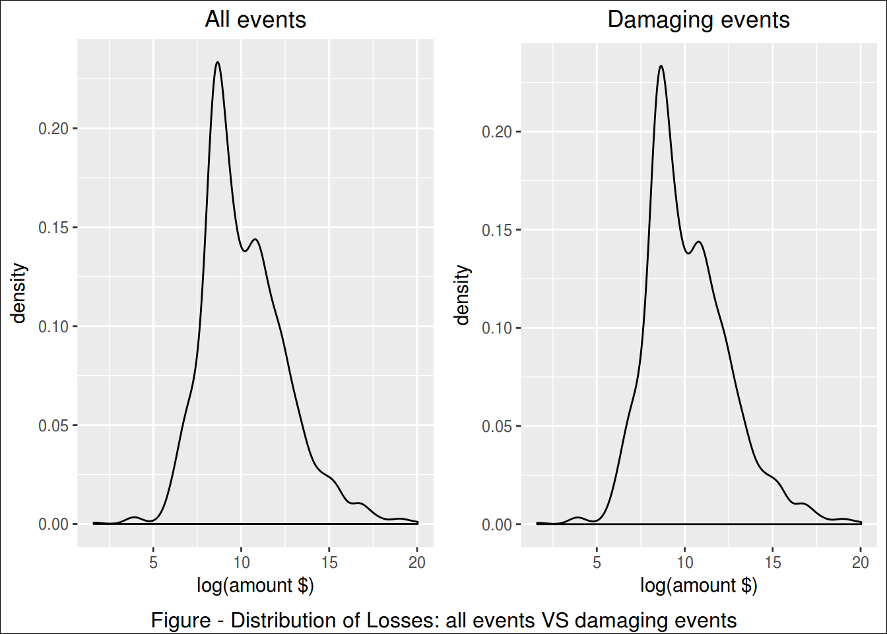
Looking at this distribution, we can infer that 95% of the damaging occurrences caused up to $5,000,000 in losses.
In this study, we looked on the 5% most harmful occurrences.
# subset for 95% CI
crop95.df <- filter(crop.df, crop.ev>qt[1])
# create color pallete for all events
colourCount = length(unique(crop95.df$event))
getPalette = colorRampPalette(brewer.pal(colourCount, "Set1"))
# print a table
kable(crop95.df[,c(13,1:6,8,11:12)])| rank | event | mag | day | duration | state | countyname | value | mean | median |
|---|---|---|---|---|---|---|---|---|---|
| 1 | DROUGHT | 0 | 1998-07-06 | 0S | OK | OKZ049 - | $500,000,000 | $1,660,614 | $20,000 |
| 2 | FLOOD | 0 | 2008-06-01 | 0S | IA | MARSHALL | $250,000,000 | $1,660,614 | $20,000 |
| 3 | WIND | 94 | 2004-08-13 | 0S | FL | FLZ052 - | $175,000,000 | $1,660,614 | $20,000 |
| 4 | DROUGHT | 0 | 2000-12-01 | 0S | LA | LAZ027>03 | $169,600,000 | $1,660,614 | $20,000 |
| 5 | DROUGHT | 0 | 2006-06-01 | 0S | OK | OKZ004>04 | $151,000,000 | $1,660,614 | $20,000 |
| 6 | DROUGHT | 0 | 2005-08-01 | 0S | TX | TXZ092>09 | $60,000,000 | $1,660,614 | $20,000 |
| 7 | COLD|FREEZ | 0 | 2005-04-13 | 0S | WA | WAZ027 | $50,000,000 | $1,660,614 | $20,000 |
| 8 | DROUGHT | 0 | 1999-08-01 | 0S | VA | VAZ021 - | $41,660,000 | $1,660,614 | $20,000 |
| 9 | WIND | 61 | 2011-09-02 | 0S | IA | MITCHELL | $41,000,000 | $1,660,614 | $20,000 |
| 10 | DROUGHT | 0 | 2006-08-01 | 0S | TX | TXZ023>02 | $26,000,000 | $1,660,614 | $20,000 |
| 11 | HURRICANE | 0 | 2004-09-13 | 0S | FL | FLZ001>00 | $25,000,000 | $1,660,614 | $20,000 |
| 12 | HAIL | 175 | 1996-07-16 | 0S | NE | DAKOTA | $22,000,000 | $1,660,614 | $20,000 |
| 13 | FLOOD | 0 | 2010-06-12 | 0S | IA | RINGGOLD | $20,000,000 | $1,660,614 | $20,000 |
| 14 | WIND | 0 | 1998-05-31 | 0S | MI | KENT | $20,000,000 | $1,660,614 | $20,000 |
| 15 | FLOOD | 0 | 2010-06-12 | 0S | IA | MARSHALL | $20,000,000 | $1,660,614 | $20,000 |
| 16 | WIND | 55 | 2007-07-15 | 0S | ND | CASS | $20,000,000 | $1,660,614 | $20,000 |
| 17 | FLOOD | 0 | 2010-06-12 | 0S | IA | HAMILTON | $20,000,000 | $1,660,614 | $20,000 |
| 18 | FLOOD | 0 | 2010-06-12 | 0S | IA | BOONE | $20,000,000 | $1,660,614 | $20,000 |
| 19 | WIND | 64 | 1996-07-12 | 0S | NC | NCZ099 | $16,000,000 | $1,660,614 | $20,000 |
| 20 | WIND | 80 | 1995-07-13 | NA | MN | MNZ003 - | $16,000,000 | $1,660,614 | $20,000 |
| 21 | HAIL | 2 | 2010-10-21 | 1d 0H 0M 0S | TX | TERRY | $15,000,000 | $1,660,614 | $20,000 |
| 22 | HURRICANE | 0 | 1999-11-16 | 0S | PR | PRZ005 - | $14,000,000 | $1,660,614 | $20,000 |
| 23 | RAIN|PRECIP | 0 | 2003-04-01 | 0S | CA | MADERA | $13,200,000 | $1,660,614 | $20,000 |
| 24 | TORNADO | 0 | 2009-05-08 | 0S | MO | SHANNON | $13,000,000 | $1,660,614 | $20,000 |
| 25 | FLOOD | 0 | 2008-07-29 | 0S | MO | RALLS | $10,000,000 | $1,660,614 | $20,000 |
| 26 | HAIL | 175 | 1997-06-25 | 0S | NE | KIMBALL | $6,000,000 | $1,660,614 | $20,000 |
| 27 | URBAN/SML STREAM FLD | 0 | 1998-03-31 | 1d 0H 0M 0S | CA | KERN | $5,700,000 | $1,660,614 | $20,000 |
worst.crop.single.ev <- crop95.df$event[1]
worst.crop.single.st <- crop95.df$state[1]
worst.crop.single.ct <- crop95.df$countyname[1]
worst.crop.single.dt <- crop95.df$day[1]
worst.crop.single.value <- crop95.df$value[1]plt.crop.single <- ggplot(crop95.df, aes(day, crop.ev, colour=event))
(plt.crop.single <- plt.crop.single + geom_point() +
geom_text(aes(label=ifelse(rank <= 10,
as.character(day),""),
hjust=-.03,vjust=0.5)) +
geom_hline(aes(yintercept = media.raw), linetype=2) +
geom_hline(aes(yintercept = mediana.raw), linetype=3) +
labs(title="Most Crop Dammaging Events in a Single Occurrence",
y="Damages", x="") +
expand_limits(x=as.Date('2017-01-01'))+ #ok
scale_y_continuous(labels = dollar)+
scale_colour_manual(values = getPalette(colourCount))+
theme(legend.title=element_blank()) +
theme(legend.position="bottom") +
guides(fill=guide_legend(nrow=5, byrow=TRUE)) +
theme(axis.text.x = element_text(angle = 90, hjust = 1)) +
theme(plot.title = element_text(hjust = 0.5))
) 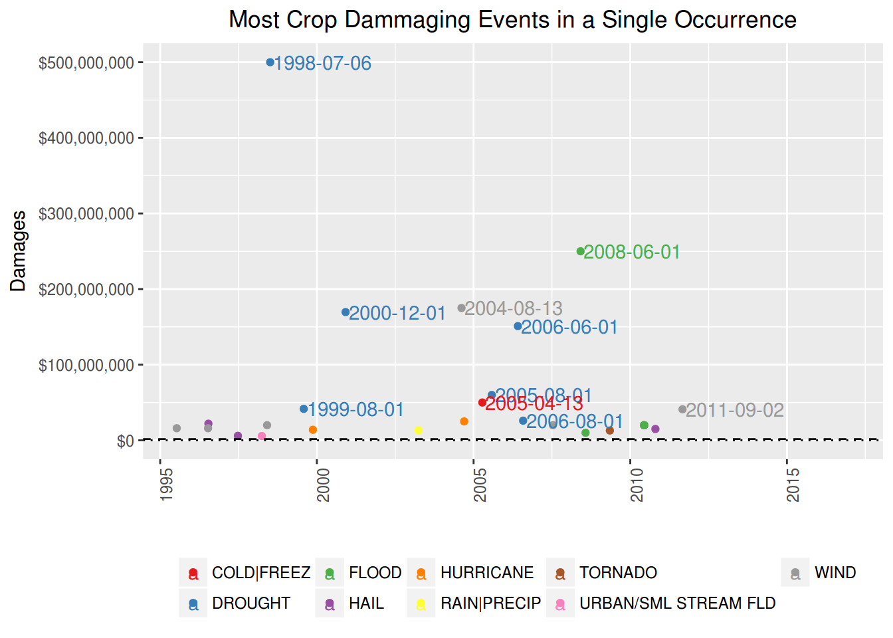
The single most economic damaging event to crops was a DROUGHT, that occurred in OK, OKZ049 - , on 1998-07-06, causing U$ $500,000,000 in losses .
Most Crop Damaging event in all time
Notice that are several occurrences of the same type of event along the time.
Therefore, in order to know which is the worst type of event along all the years, we summed up the losses caused by each one of occurrences of this events.
Notice that we are interested only in the worst of them, ie, the ones which are above the mean.
# totals per event
crop.all.df <- crop.df %>% group_by(event) %>%
summarise(total.raw = sum(crop.ev)) %>%
arrange(desc(total.raw)) %>%
mutate(media.raw = mean(total.raw),
mediana.raw = median(total.raw),
total = dollar(total.raw),
mean = dollar(media.raw),
median = dollar(mediana.raw),
rank = seq_len(length(event))) %>%
filter(total.raw > mean(total.raw))
# create color pallete for all events
colourCount = length(unique(crop.all.df$event))
getPalette = colorRampPalette(brewer.pal(colourCount, "Set1"))
# prepare text for inline R
worst.crop.all.ev <- crop.all.df$event[1]
worst.crop.total <- crop.all.df$total[1]
# a table
kable(crop.all.df[, c(8,1,5:7)])| rank | event | total | mean | median |
|---|---|---|---|---|
| 1 | DROUGHT | $951,577,000 | $124,442,257 | $12,121,000 |
| 2 | FLOOD | $396,753,000 | $124,442,257 | $12,121,000 |
| 3 | WIND | $330,213,855 | $124,442,257 | $12,121,000 |
| 4 | HAIL | $150,330,000 | $124,442,257 | $12,121,000 |
plt.crop.all <- ggplot(data=crop.all.df, aes(event, total.raw, fill=event))
(plt.crop.all <- plt.crop.all + geom_bar(stat="identity") +
geom_text(aes(label=ifelse(total.raw==max(total.raw),
paste(event, dollar(max(total.raw)), sep=": "),'')),
hjust=0,vjust=2) +
geom_hline(aes(yintercept = media.raw), linetype=1) +
geom_hline(aes(yintercept = mediana.raw), linetype=2) +
labs(title="Most Crop damaging event", y="Damages", x="") +
scale_y_continuous(labels = dollar)+
theme(legend.position="none") +
scale_colour_manual(values = getPalette(colourCount))+
theme(legend.title=element_blank()) +
theme(axis.text.x = element_text(angle = 90, hjust = 1)) +
theme(plot.title = element_text(hjust = 0.5))
) 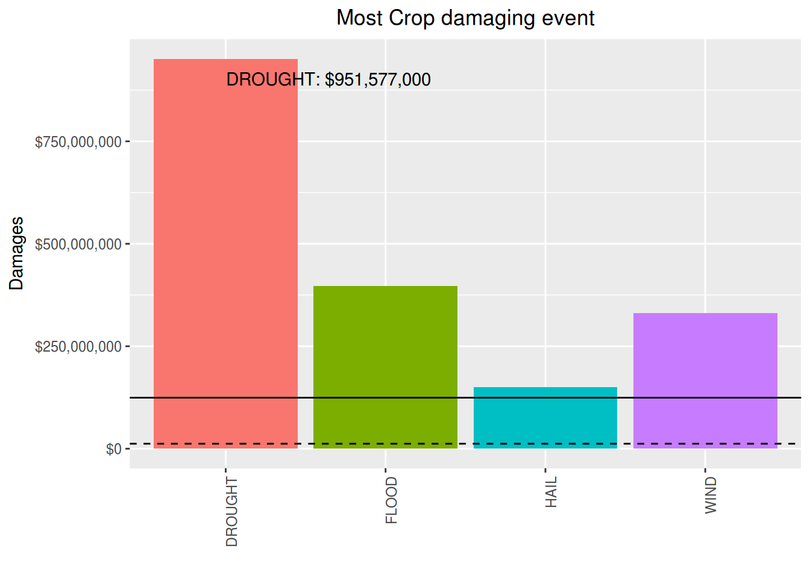
The most crop damaging event along the time is the DROUGHT. It has caused $951,577,000 in losses.
Just for curiosity, lets show now what are the less damaging among the events:
crop.all.df <- crop.df %>% group_by(event) %>%
summarise(total.raw = sum(crop.ev)) %>%
arrange(total.raw) %>%
mutate(media.raw = mean(total.raw),
mediana.raw = median(total.raw),
total = dollar(total.raw),
mean = dollar(media.raw),
median = dollar(mediana.raw),
rank = seq(length(event),1, by=-1))
kable(crop.all.df[1:10, c(8,1,5:7)])| rank | event | total | mean | median |
|---|---|---|---|---|
| 16 | SNOW | $200 | $124,442,257 | $12,121,000 |
| 15 | DRY MICROBURST | $5,000 | $124,442,257 | $12,121,000 |
| 14 | LIGHTNING | $32,600 | $124,442,257 | $12,121,000 |
| 13 | TIDE | $100,000 | $124,442,257 | $12,121,000 |
| 12 | FIRE | $513,000 | $124,442,257 | $12,121,000 |
| 11 | STORM | $630,000 | $124,442,257 | $12,121,000 |
| 10 | OTHER | $768,960 | $124,442,257 | $12,121,000 |
| 9 | URBAN/SML STREAM FLD | $5,730,000 | $124,442,257 | $12,121,000 |
| 8 | RAIN|PRECIP | $18,512,000 | $124,442,257 | $12,121,000 |
| 7 | TORNADO | $28,101,500 | $124,442,257 | $12,121,000 |
The single most fatal event was a HEAT|WARM, that occurred in AZ, AZZ023, on 2005-07-12, killing 30 people.
The most fatal event along the time is the TORNADO. It has killed 219 people until now.
The single most injuring event was a TORNADO, that occurred in IL, WILL, on 1990-08-28, injuring 350 people.
The most injuring event along the time is the TORNADO. It has injuried people until now.
The single most economic damaging event to properties was a HURRICANE, that occurred in FL, FLZ001>00, on 2004-09-13, causing U$ $4,000,000,000 in losses.
The most property damaging event along the time is the HURRICANE. It has caused $4,451,850,000 in losses.
The single most economic damaging event to crops was a DROUGHT, that occurred in OK, OKZ049 - , on 1998-07-06, causing U$ $500,000,000 in losses .
The most crop damaging event along the time is the DROUGHT. It has caused $951,577,000 in losses.